— 인턴 활동 중 필요한 정보를 확인하시기 바랍니다.
입사 첫 주에 완료해야 하는 항목입니다. 항목을 눌러 완료 표시를 남겨보세요.
입사 당일 인사팀 안내에 따라 아래 서류를 작성합니다.
입사 당일 개인 번호가 부여된 출입증을 수령합니다. 사옥 출입 및 구내식당 이용 시 필요하니 상시 패용해주세요.
모든 신규입사자는 채용 시 법정의무교육인 안전보건교육을 필수 이수해야 합니다. 입사 당일 인재문화팀 안내메일에 따라 입사 후 일주일 이내 이수해주세요.
입사 후 익일까지 아래 서류를 인사팀 윤정연 매니저에게 제출해주세요. — jeongyeon@donga.com
인턴 기간 중에는 인턴증을 출입증 케이스에 끼워 사원증 형태로 패용해주세요.
제작까지 약 ±5일 소요되며, 제작 완료 시 별도 수령 안내 메일을 드립니다. (인턴증 수령 담당자가 별도로 있는 부서는 대리 전달)
사내 시스템 '지니어스' 계정을 등록해주세요. 인사팀에서 전달하는 사번 및 ID를 참고하여 아래 절차를 진행해주세요.
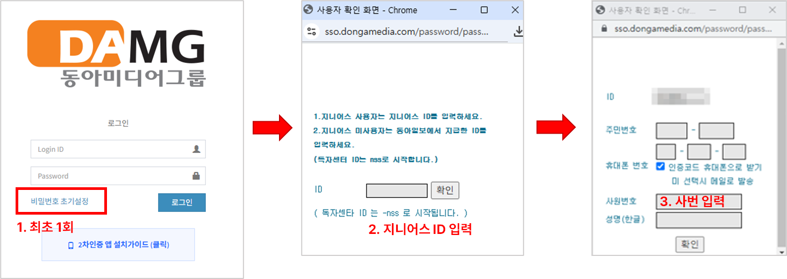
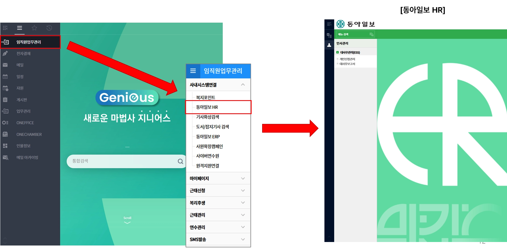
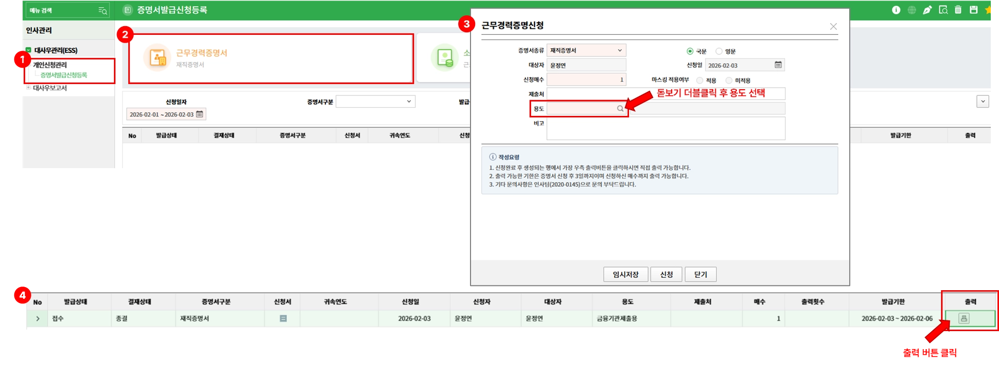
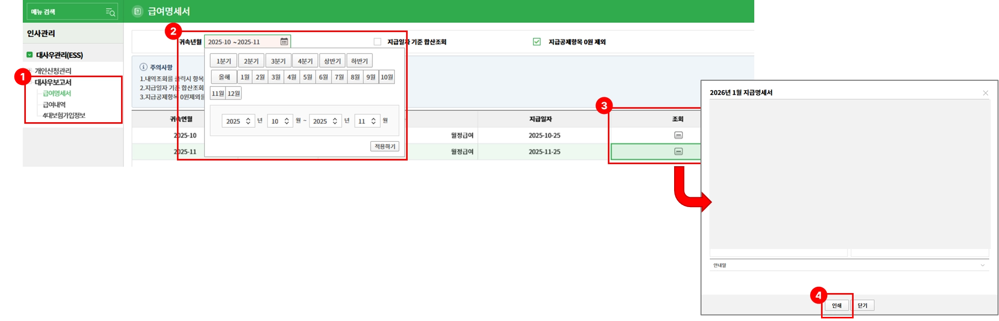
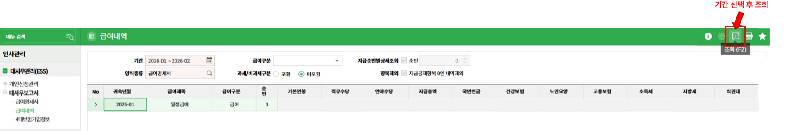
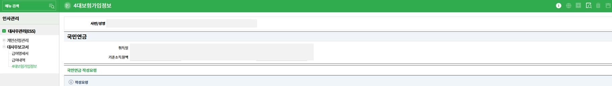
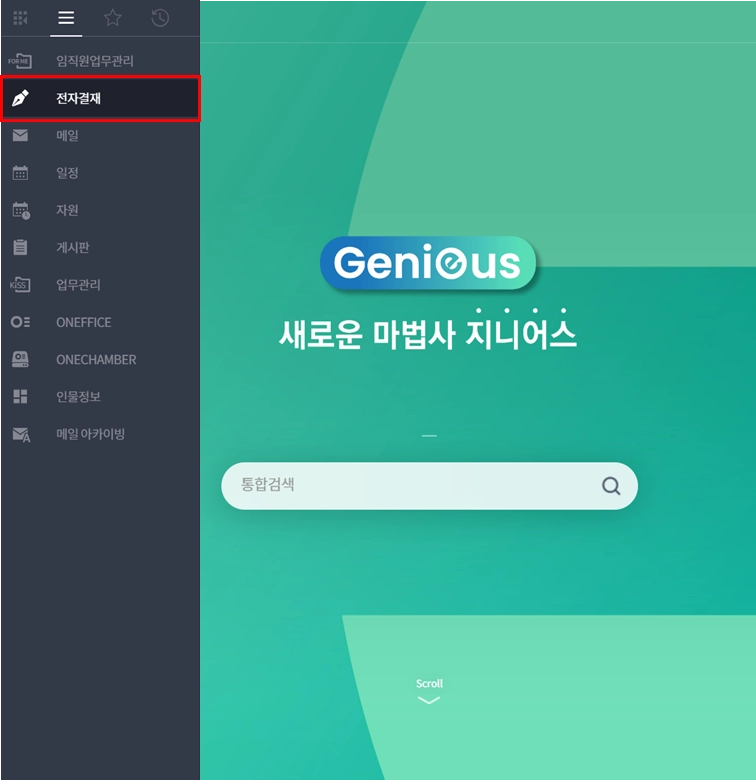
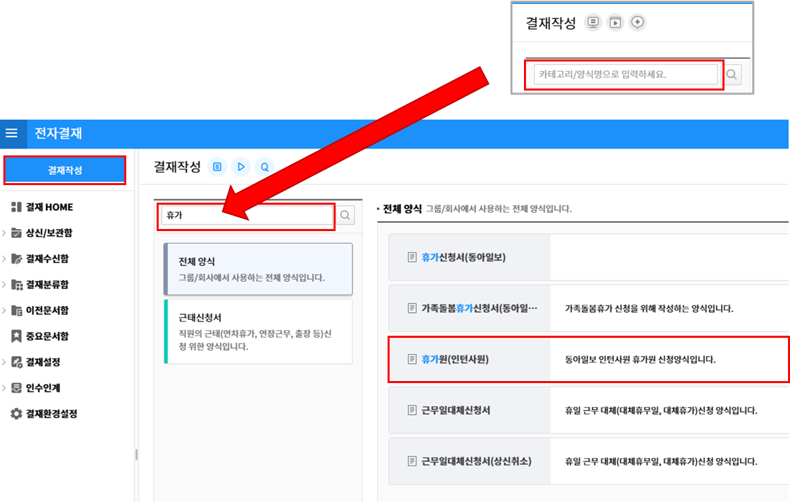
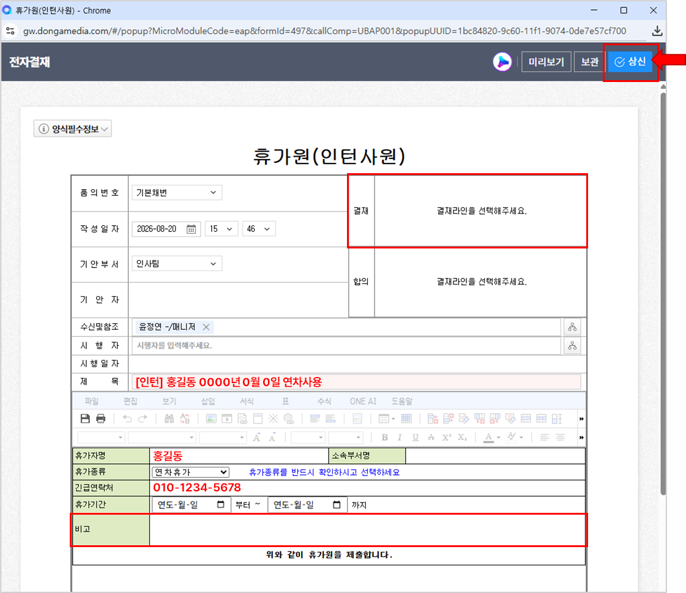
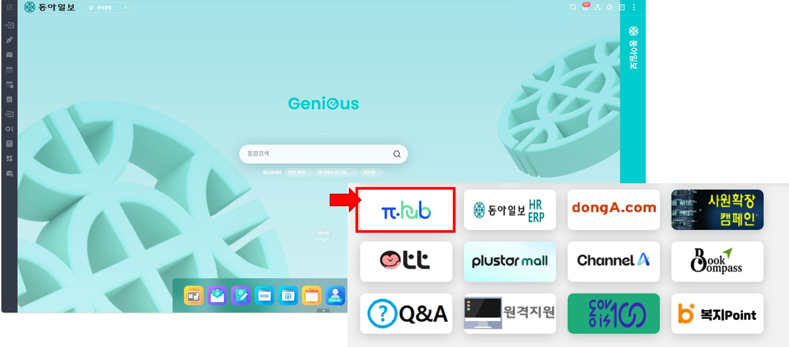
지니어스 ID 발급 완료 후, 사내 와이파이 사용 가능하오니 업무에 필요하신 분은 아래 내용 참고하시기 바랍니다.
※ 토요일은 전일 배식 불가
※ 광화문은 신문을 제작하는 주중 공휴일 혹은 일요일 석식과 셀프라면 운영
동아일보는 1920년에 창간된 한국의 대표 신문입니다.
민족주의, 민주주의, 문화주의라는 3대 사시(社是) 아래 권력을 감시하며 한 세기 동안 불편부당 시시비비(不偏不黨 是是非非)의 정신으로 언론의 책무를 다하고 있습니다.
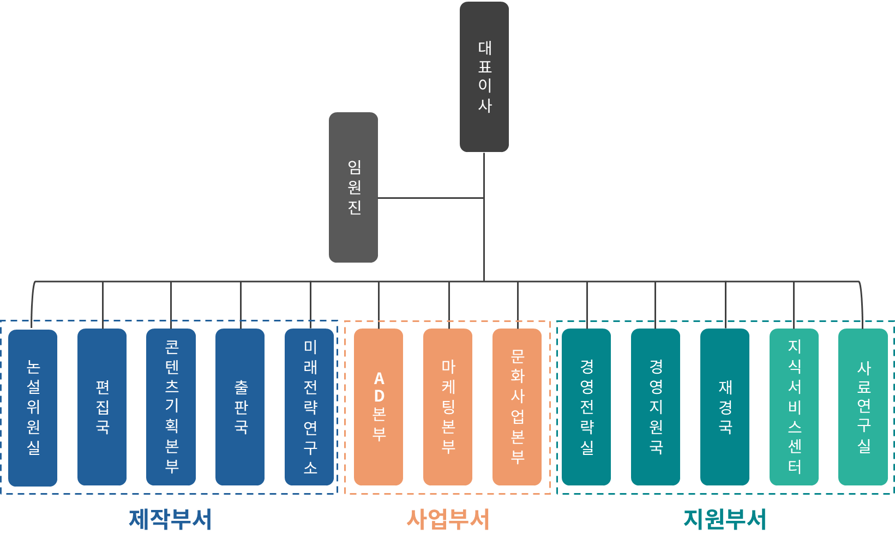